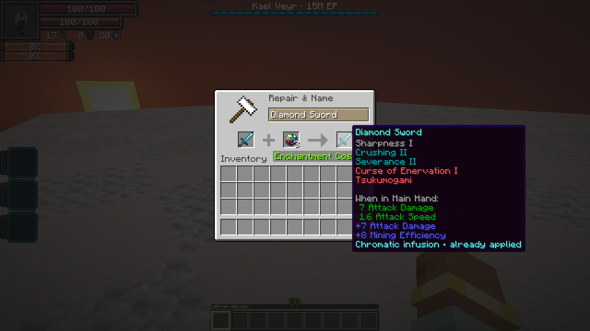

On this page
A one-time equipment enhancement. In an anvil, combine equipment in the left slot with a Chromatic Orb in the right slot. Taking the result costs one orb and one XP level.
Every eligible engraving gains one level, including beyond its normal maximum. Curses, blessings and ordinary enchantments are unchanged. Equipment needs at least one eligible engraving.
An infused piece cannot use another orb. Its tooltip shows Chromatic infusion · already applied. Renaming, repairs, smithing and normal gear evolution preserve that history. A grindstone removes engravings normally and does not make the equipment eligible for another orb.

Crafting
Combine one of each ingredient below in any arrangement in a crafting grid to make one orb.
| Ingredient | Source |
|---|---|
| Bulwark Shard | High Orcs, Armorsauruses and Horned Bears |
| Sentinel Shard | Dragonewts, Basilisks, Greater Daemons and Arch Daemons |
| Skirmisher Shard | Tempest Star Wolves, Blade Tigers and Knight Spiders |
| Starless Core | Kael Veyr · one guaranteed per defeat |
Shards have a 25% drop chance from the matching unowned High Realm elite. The kill must be credited to a player or their subordinate. Ordinary mobs and owned subordinates do not drop shards.
Upgraded engraving effects
The tables show an engraving at its ordinary maximum → one level above maximum. An orb used below that maximum still adds only one level. Values use the default enchantment data shared by Tensura 2.0.1.3 and 2.0.1.4; server datapacks and configuration can change them.
Bonuses apply in each engraving’s normal equipment slots and attack conditions. Weapon and armor percentages below are native equipment-attribute bonus coefficients, before other skills and defenses. Attribute contributions combine with existing equipment and skill modifiers.
Weapon and elemental effects
| Engraving | Upgrade | Effect |
|---|---|---|
| Crushing | I → II | Weapon damage bonus 50% → 100%; mining efficiency 5 → 8; arrow damage +0.5 → +1. Extra durability damage per attack also rises 5 → 10. |
| Sturdy | I → II | Weapon damage bonus 30% → 60%; armor bonus 10% → 20%; mining efficiency +3 → +6; arrow damage +0.3 → +0.6. Its normal durability-loss prevention is already saturated at I. |
| Swift | I → II | Weapon damage bonus 10% → 20%; attack speed +0.2 → +0.4; melee reach +1 → +2 blocks; mining efficiency 3 → 6; crossbow charge-time reduction 0.5 → 1 second; arrow damage +0.1 → +0.2. |
| Barrier Piercing | II → III | At full attack charge, multilayer/barrier-entity reduction 20% → 30% per eligible hit. Armor mitigation subtraction 40 → 60 percentage points, with mitigation floored at zero; projectile piercing amount 6 → 9. |
| Severance | I → II | Flat attack damage +3 → +6. The anti-healing wound fraction remains capped at 50% of the triggering damage; II does not turn it into 100%. Native wound and protection checks still apply. |
| Holy Weapon | I → II | Additional Holy damage coefficient 1× → 2× the native triggering-attack amount, before that extra hit’s defenses. |
| Magic Weapon | I → II | Additional Magic damage coefficient 1× → 2× the native triggering-attack amount, before that extra hit’s defenses. |
| Soul Eater | I → II | Additional Spiritual / Soul Scatter damage coefficient 1× → 2× the native triggering-attack amount. This targets SHP through Tensura’s spiritual-damage rules. |
| Energy Steal | I → II | Transfers 1% → 2% of the target’s current aura and current magicules per eligible trigger. The player weapon cooldown stays 1 second. It does not steal permanent capacity. |
| Elemental Boost | I → II | Each covered elemental damage-boost attribute receives +0.10 → +0.20 per applicable equipped item: earth, darkness, flame, light, space, water and wind. |
Defensive effects
| Engraving | Upgrade | Effect |
|---|---|---|
| Elemental Resistance | II → III | Each of the seven covered elemental resistance attributes receives +0.20 → +0.30 per applicable equipped item. |
| Magic Protection | I → II | Magic-resistance attribute contribution +0.10 → +0.20 per applicable equipped item. |
| Spiritual Protection | I → II | Spiritual-damage reduction 10% → 20%, using the highest applicable equipped level. |
| Severance Protection | I → II | Reduction to newly applied Severance wounds 10% → 20%, using the highest applicable equipped level. Existing wounds are not removed. |
| Energy Protection | I → II | Reduction to energy-drain amounts 10% → 20%, using the highest applicable equipped level. |
| Magic Interference | I → II | Armor contribution to qualifying magic-damage reduction 20% → 40% per piece at default settings. A blocking shield still contributes only one level; the weapon’s barrier-bypass check remains presence-based. |
| Holy Coat | I → II | Damage multiplier against qualifying holy-affected targets 1.25× → 1.5×; arrow damage +0.25 → +0.5; protection against qualifying holy-affected direct attackers 4 → 8 protection points. |
Utility effects
| Engraving | Upgrade | Effect |
|---|---|---|
| Magic Capacity | III → IV | Adds 3 → 4 magic-storage slots to compatible native spell-storage equipment. It does not increase the player’s maximum magicules. |
| Magicule Absorption | II → III | Adds +2.0 → +3.0 to the magicule-regeneration multiplier per applicable item. With a base multiplier of 1 and no other modifiers, that is 3× → 4× total regeneration. |
| Slotting | III → IV | Elemental-core storage capacity 3 → 4. Core-combination damage and casting still require a matching native combination recipe; see the four-core limit below. |
| Breathing Support | I → II | No stronger effect. Level I already removes the native need to breathe; II keeps that same benefit. |
Inheritance and special effects
| Engraving | Upgrade | Effect |
|---|---|---|
| Dead End Rainbow | I → II | At full attack charge, direct SHP damage changes from clamp(S/7 + 10% of S, 10, 500) to clamp(S/7 + 20% of S, 20, 1,000), where S is the target’s maximum SHP. The 1-second player cooldown remains. Armor mitigation is already fully bypassed at I. |
| Intangibility | I → II | Projectile piercing amount 5 → 10. Armor mitigation is already fully bypassed at I, and the native melee shield-bypass condition does not become stronger. |
| Nullification | I → II | No stronger effect. Barrier shattering, skill-effect removal, spiritual targeting and the 2-second skill seal remain unchanged. |
| Afterwind | I → II | Vesper delayed Wind cut: 30% → 75% of raw attack damage. The 0.2-second delay, 3-second cooldown and 5-second mark stay the same. |
Mysticism addon engravings
These apply when Mysticism is installed, including the checked Neo Otherworld 1.1.3a build.
| Engraving | Upgrade | Effect |
|---|---|---|
| Holy Flames | I → II | Armor mitigation subtraction 50 → 100 percentage points, floored at zero. The applied Brimstone Flames I remains 5 seconds. |
| Boreal Frost | I → II | No stronger effect. Both levels apply Eternal Permafrost VI for 10 seconds; its duration and amplifier are fixed in the enchantment definition. |
Limits and exclusions
- Four-core combinations: Slotting IV can store four cores, but the checked native data has no four-core combination recipes. A four-core loadout therefore has no matching native combination attack or cast. Use a supported mix unless your server adds a matching recipe. The native five-core special recipe requires five slots and is not unlocked by III → IV.
- Magic Interference: native resistance-degradation and current-magicule checks still gate its reduction. An attacker with at least 1.5× the wearer’s current magicules bypasses that engraving-based mitigation. Higher armor levels do not change the separate weapon barrier-bypass condition.
- Armor and protection limits: armor mitigation cannot fall below zero. Native protection-point and resistance limits still apply; an extra level does not guarantee the same increase to final damage or defense in every build.
- Protected blessings: Blessing of Vitality, Blessing of Vigor, Blessing of Transcendence, Blessing of Growth and Blessing of Restoration receive no level increase.
- Protected curses: curse-tagged engravings, including Tsukumogami, and configured curse engravings stay unchanged. Ordinary enchantments such as Sharpness also stay unchanged.
Engraving research
Godly Craftsman cannot store engravings above their ordinary maximum. Rejected overcap engravings stay on the donor; other eligible entries can still be learned. Existing overcap knowledge in that skill is normalized when read.
Lord of the Forge can store overcap levels within its research limits. Applying an Orb-eligible overcap marks the receiving equipment’s Chromatic upgrade as used. This blocks repeatedly copying the engraving to a fresh item and raising it with another Orb. Applying only normal capped levels keeps the upgrade available. Editing already-infused equipment retains its level and spent upgrade.